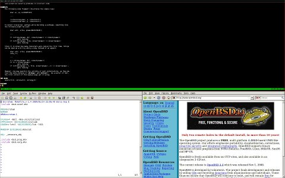
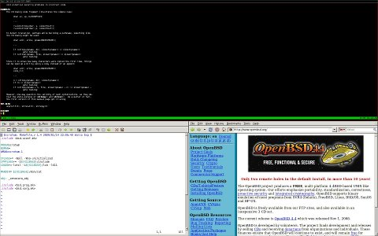

![[scrotwm]](scrotwm.jpg)
Vertical stack.
![[scrotwm2]](scrotwm2.jpg)
Horizontal stack.

Horizontal stack with gvim & Firefox.
Scrotwm is a small dynamic tiling window manager for X11. It tries to stay out of the way so that valuable screen real estate can be used for much more important stuff. It has sane defaults and does not require one to learn a language to do any configuration. It was written by hackers for hackers and it strives to be small, compact and fast.
It was largely inspired by xmonad and dwm. Both are fine products but suffer from things like: crazy-unportable-language-syndrome, silly defaults, asymmetrical window layout, "how hard can it be?" and good old NIH. Nevertheless dwm was a phenomenal resource and many good ideas and code was borrowed from it. On the other hand xmonad has great defaults, key bindings and xinerama support but is crippled by not being written in C.
Scrotwm is a beautiful pearl!
For it too, was created by grinding irritation.
Nothing is a bigger waste of time than moving windows around until they are the
right size-ish or having just about any relevant key combination being eaten
for some task one never needs.
The path of agony is too long to quote and in classical
OpenBSD
fashion (put up, or hack up) a brand new window manager was whooped up to serve
no other purpose than to obey its masters.
It was written by Marco Peereboom & Ryan Thomas McBride and it is released
under the ISC
license.
Patches can be accepted provided they are ISC licensed as well.
Following are a few screenshots of scrotwm in action.
Horizontal stack.

Horizontal stack with gvim & Firefox.
To-do:
Please read the man pages for a more detailed explanation.
You can download the source via anoncvs at:
CVSROOT=anoncvs@code.freedaemon.com:/scrotwm
Eventually there will be a link here to subscribe to CVS changes.
Copyright (c) 2009 Marco Peereboom <marco@peereboom.us> & Ryan
Thomas McBride <mcbride@countersiege.com>
{kind=link}